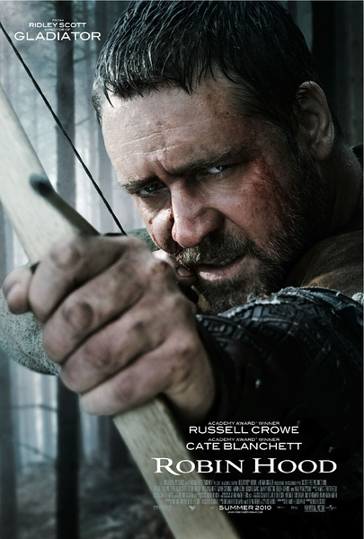
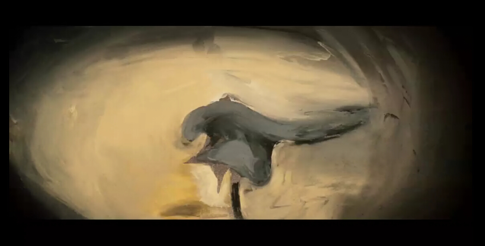
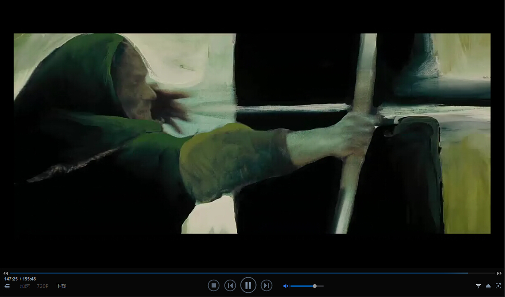
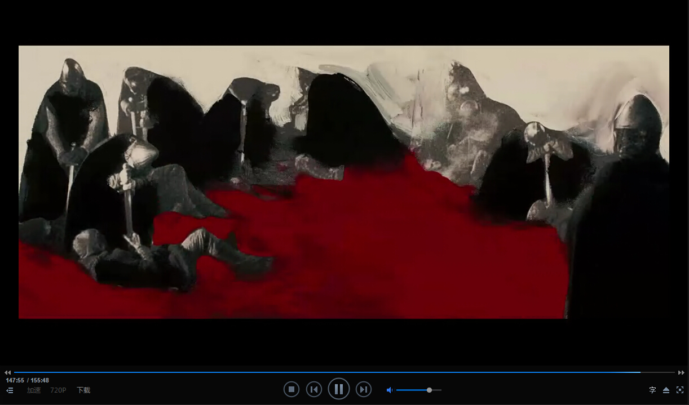
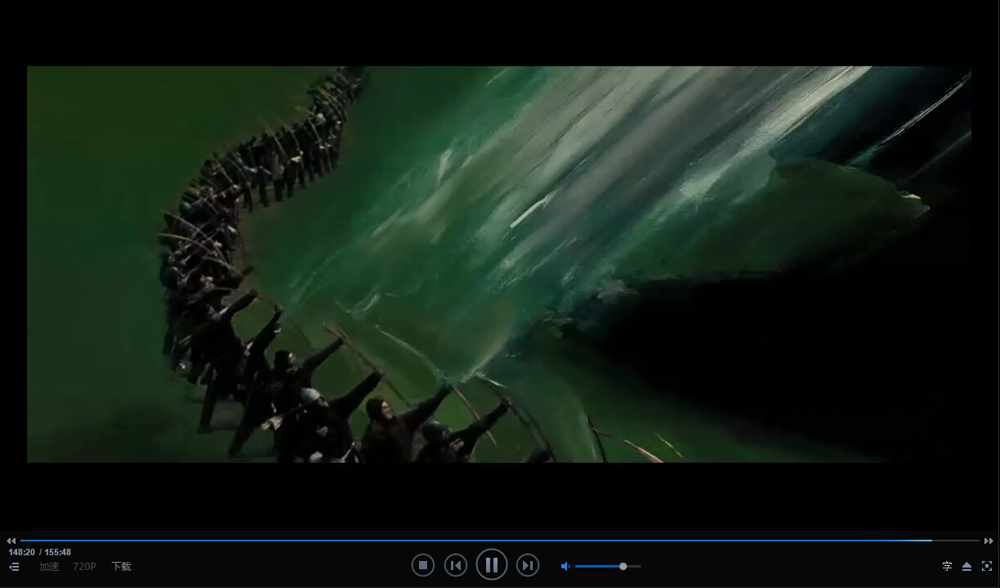

I spent a afternoon on Thu with Robin Hood this week. If you are a man being addicted to cool weapon, and this film is worth watching. But it maybe make you disappointed if you expect to find a story about a superhero in it, I mean it is not just a superhero film but from my point it is more like a history theme film though lack of the necessary seriousness. Thus if you are interested with the Middle Ages history or cool weapon, and you want to spend after-lunch time, it is always suited. Warning again, it is not a superhero film.
Following I will talk about the movieclip in short. Merely a simplified version for the poins of this review cared.
The film bigins With the cartoon pictures showing the man runing.

Then the man be a eagle, is it a eagle? In order to comfirm what it is I watch those pictures many times, but yet don't sure that.
I don't know what it means, is it represent freedom? or other meanings? watched this film I think it is possibly symbolize the freedom, reason that magna carter. Many puzzles relate to begaining so the open is terrible for me. Let's go to next, and there are some words to expain the era and the outlaw. The open speech is also redundant. I am not willing to talk about this to make in harangue. And we over the film and come the ending, ending clips show french killed the English and the army shipping.



It is no sense for a superhero film, isn't it? The movie name misleads me to regard it to be a superhero film, obviously, it is inappropriate.
There are only two pieces of music impress me.
The 1st is here
The 2nd is here
I am unable to hold myself back to write down the history related to this film. In fact I am a complete historical fan therefore historical films always are interesting for me. So that its name is unsuitable but I recommend it as a history film for you though it is something wrong to the facts in history. I refer someone‘s blog， wiki and go to library looking for some reference books, finally find out few books. The library in my school seems poor in book-collection.
The Lion-Heart Richard Ⅰ was born in England in 1157, he took the crown in his last ten years, his father is Henry Ⅱ and he is Honry's second son, he got throne through tow main rebellions. He spent about four months to pacify England, then he made the third Crusades with other two monarches Philip II and Barbarossa, the Lion-Heart and Saladin reached an accommodation in this war, at the same time, his little brother John the next monarch of England was incited to invade his land, he led the army come back to England but unfortunately he was caught by the new emperor of Holy Roman Empire Henry Ⅱ, He stayed in Holy Roman Empire more than a year, and in 1194 he arrived his country and spent about tow months to rule the political scene. In his last five years he combated in France and won a number of victories. The Lion-Heart died in 1199 but he was only 42 years old. Those are the brief of his life. According to the Lion-Heart's life time, we know that he always is a good fighter but never a qualified king. He was the most skilful in battle in all kings of European countries in Middle Age. the statue of the Lion-Heart stands there in front of The houses of parliament in London still.
The film says that Robin Hood's father sponsored the movement of the Magna Carta, I could not find out any evidence to hold that, but actually at Jun 15, 1215, nobles forced king John to sign the magna carta the most inportant official document of political history of England, later all kings ruled their behaviors by this offical document.
Not any more about this film, I haven't watched other Rid's works, and even if I saw the Black Hawk Down I didn't finish. From people's comments, I guess that Rid is good at expressing the great scene but not a hero a personality. So the Robin Hood is more like a historical film. I recommend it if you have free time and you are fond of history as me.
Before I write it I want to write down all my think, now I think it is such hard work. Those such as the Crusades, White horse statue of Alton Barnes, and detailed life of Lion-heart and Magna Carta. But this essay has token my four days. Don't want any more.
written in Apr, 21 2015 17 : 28